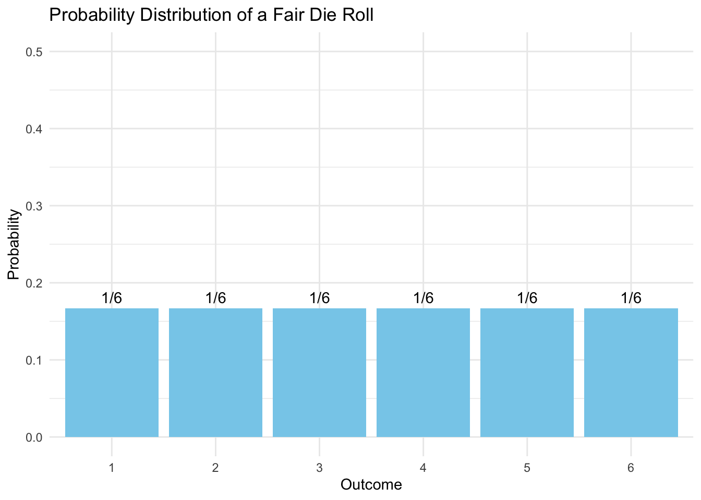
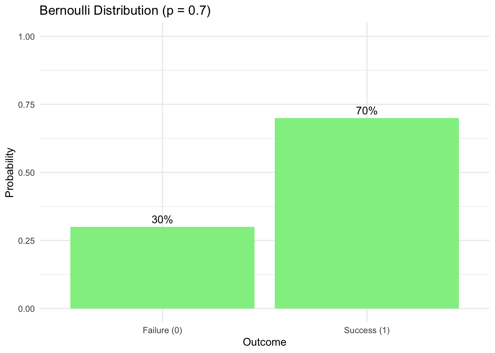
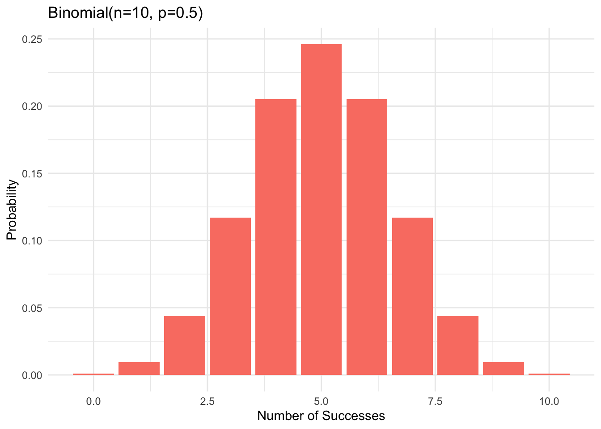
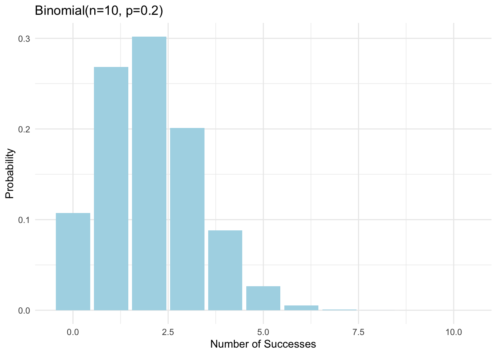
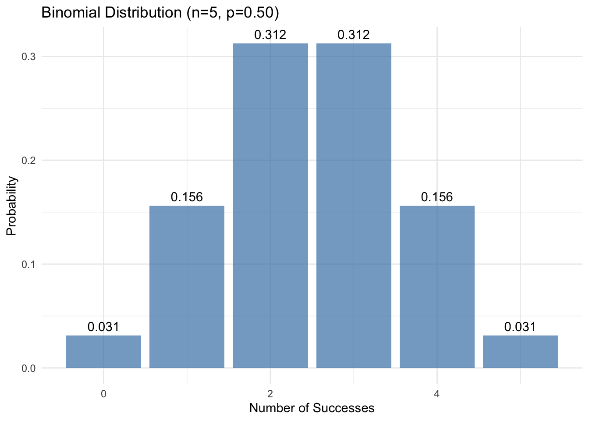
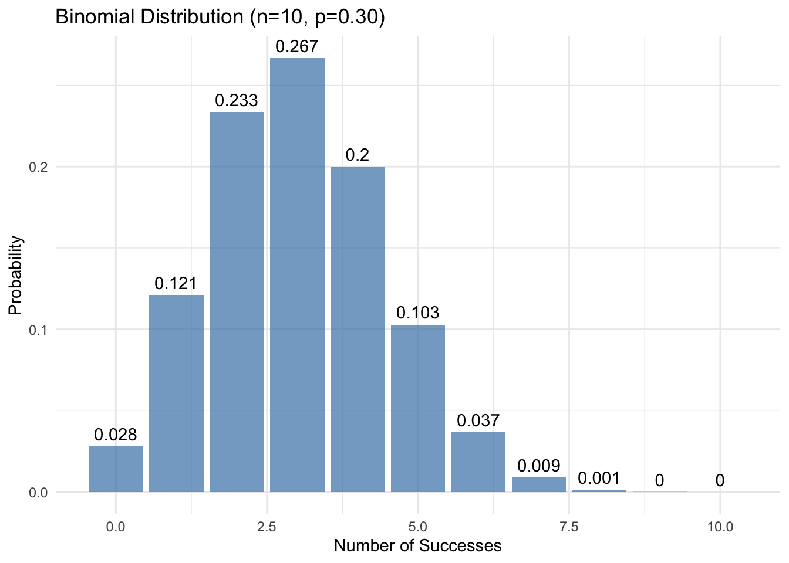
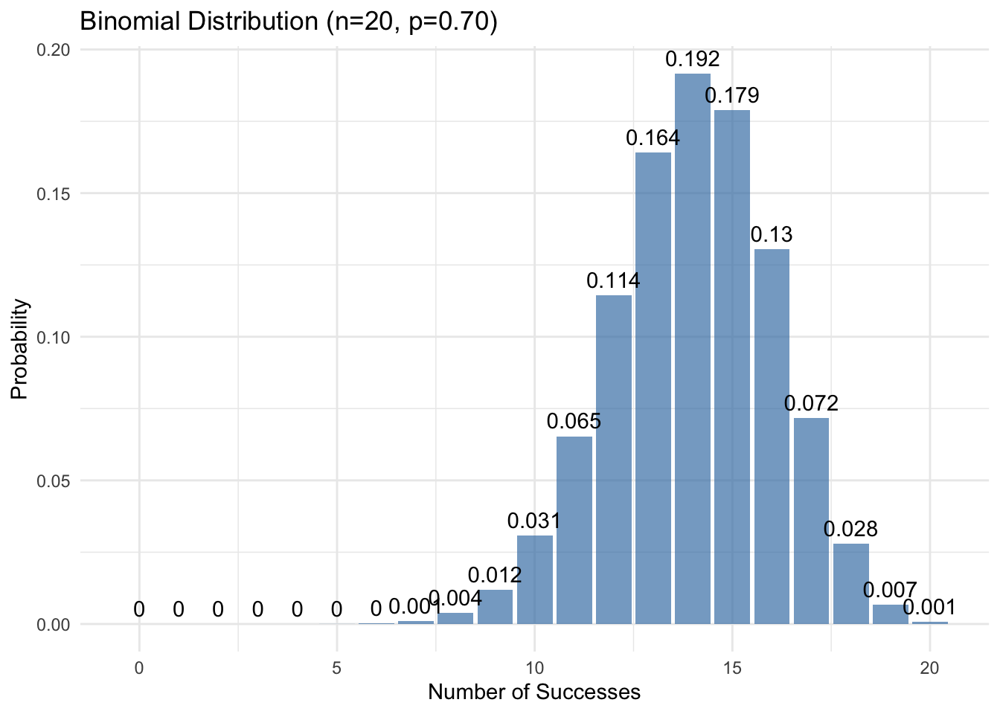

graph TB
subgraph Space["Sample Space (Ω)"]
direction LR
O1["ω₁"]
O2["ω₂"]
O3["..."]
On["ωₙ"]
SpaceCaption["All possible outcomes<br/>from our random experiment"]
O1 & O2 & O3 & On --- SpaceCaption
end
subgraph Range["Range of X"]
direction LR
X1["x₁"]
X2["x₂"]
X3["..."]
Xm["xₘ"]
RangeCaption["Numerical values<br/>X: Ω → ℝ"]
X1 & X2 & X3 & Xm --- RangeCaption
end
%% Connections with labels
O1 -->|"X"| X1
O2 -->|"X"| X2
O3 -->|"X"| X2
On -->|"X"| Xm
%% Styling
classDef default fill:#f8f8f8,stroke:none,color:#000
classDef outcomes fill:#e1f5fe,stroke:#333,stroke-width:2px,color:#000
classDef values fill:#e8f5e9,stroke:#333,stroke-width:2px,color:#000
classDef caption fill:none,stroke:none,color:#000
class O1,O2,O3,On outcomes
class X1,X2,X3,Xm values
class SpaceCaption,RangeCaption caption
19 Random Variables and Probability Distributions
Understanding Random Variables and Probability Distributions: Mathematical Models for Randomness
19.0.1 Beyond Classical Probability
The classical approach to probability (calculating favorable outcomes divided by total possible outcomes) rests on a crucial assumption: we have perfect knowledge of how our outcomes are generated. For instance, when we say a coin is fair, we assume its physical properties and flipping mechanism produce heads and tails with exactly equal probability.
But how do we know this? In real-world scenarios:
- Physical coins may be slightly unbalanced
- Flipping mechanisms might favor certain outcomes
- Environmental factors could influence results
- Manufacturing processes could introduce bias
This highlights a fundamental challenge: we often observe outcomes first and then must infer the underlying process that generated them. This is where random variables and probability distributions become essential tools:
- A Random Variable (RV) is a function that assigns a numerical value to each outcome in a sample space S:
- Allow us to model uncertain outcomes mathematically
- Bridge the gap between physical events and numerical analysis
- Enable quantitative description of patterns in observed data
- A Probability Distribution is a list of all of the possible outcomes of a random variable with their corresponding probabilities:
- Describe how likely different outcomes are
- Can be adjusted based on observed data
- Include classical probability as a special case
- Allow for modeling of biased or uneven processes
Think about flipping a coin 100 times and getting 47 heads. Is the coin fair? What’s the actual probability of heads?
To answer these questions rigorously, we need to:
- Model the underlying random process (data-generating mechanism)
- Connect our observations to this theoretical model
- Make precise statements about probabilities of different outcomes
19.0.2 Random Variables and Probability Distributions
A random variable X is a function that assigns a numerical value to each outcome in a sample space S. More formally, it’s a function X: S \rightarrow \mathbb{R} that maps outcomes from our sample space to real numbers.
For example: when flipping a coin, we might define X(H) = 1 for heads and X(T) = 0 for tails. This formalization helps us model the data-generating process.
For discrete random variables, the probability distribution is described by its Probability Mass Function (PMF) p_X(x) or P(X = x), which specifies our model’s assumptions about how likely each outcome is. A valid PMF must satisfy:
- Non-negativity: p_X(x) \geq 0 for all x
- Total probability: \sum_{x} p_X(x) = 1
For our (possibly unfair) coin: P(X = x) = p_X(x) = \begin{cases} p & \text{if } x = 1 \text{ (heads)} \\ 1-p & \text{if } x = 0 \text{ (tails)} \\ 0 & \text{otherwise} \end{cases}
where p is the true probability of heads that we’re trying to understand.
This framework lets us move beyond simply counting favorable outcomes to modeling and understanding the underlying random processes that generate our observations. It forms the foundation for working with more complex probability distributions and statistical inference.
Note: When dealing with continuous random variables (like height, weight, or time), we use Probability Density Functions (PDF) instead of PMFs. PDFs require calculus and integration to work with probabilities, which is beyond the scope of this course. We’ll focus exclusively on discrete random variables and their PMFs.
In summary, we need two key mathematical tools:
- A way to convert random outcomes into numbers (Random Variables)
- A way to describe how likely each number is (Probability Distributions)
19.0.3 Random Variable (RV): Making Randomness Measurable
A random variable (RV) is our bridge between unpredictable outcomes and their probabilities. It works in two steps:
- First, it maps outcomes to numbers
- Then, the probability distribution maps these numbers to their probabilities
A Random Variable is a function that converts unpredictable outcomes into numbers we can work with:
💡 Key Insight: RVs turn abstract outcomes into concrete numbers. For example:
- Converting “Heads/Tails” to “1/0”
- Counting successes in multiple trials
- Measuring waiting times
19.0.4 Probability Distribution Function (PDF): Describing Patterns of Randomness
Once we have numbers, we need to describe how likely each value is:
graph TB
subgraph Values["Possible Values"]
direction LR
X1["x₁"]
X2["x₂"]
X3["..."]
Xm["xₘ"]
ValuesCaption["Numbers from our RV"]
X1 & X2 & X3 & Xm --- ValuesCaption
end
subgraph Prob["Probabilities"]
direction LR
P1["f(x₁)"]
P2["f(x₂)"]
P3["..."]
Pm["f(xₘ)"]
ProbCaption["f: ℝ → [0,1]<br/>Must satisfy: Σf(xᵢ) = 1"]
P1 & P2 & P3 & Pm --- ProbCaption
end
%% Connections
X1 -->|"f"| P1
X2 -->|"f"| P2
X3 -->|"f"| P3
Xm -->|"f"| Pm
%% Styling
classDef default fill:#f8f8f8,stroke:none,color:#000
classDef values fill:#e8f5e9,stroke:#333,stroke-width:2px,color:#000
classDef probs fill:#fff3e0,stroke:#333,stroke-width:2px,color:#000
classDef caption fill:none,stroke:none,color:#000
class X1,X2,X3,Xm values
class P1,P2,P3,Pm probs
class ValuesCaption,ProbCaption caption
💡 Key Insights about PDFs:
- Maps each possible value to its probability
- Must be non-negative: f(x) ≥ 0
- Must sum to 1: Σf(x) = 1
- Shape depends on the Data Generating Process (DGP)
19.1 Models for Different Data Generating Processes (DGPs)
Different random experiments follow different patterns. We model these using specific probability distributions:
- Bernoulli: For single yes/no experiments
- Example: Single coin flip
- DGP Assumption: Two outcomes with fixed success probability
- Binomial: For counting successes in fixed trials
- Example: Number of heads in 10 coin flips
- DGP Assumption: Independent trials with same success probability
- Poisson: For counting rare events in an interval
- Example: Number of customer arrivals per hour
- DGP Assumption: Events occur independently at constant rate
💡 Important Note: These are mathematical models based on assumptions about how data is generated. Their usefulness depends on how well these assumptions match reality.
Two Coin Flips: From Fair to Biased Coins
Problem: Consider the following random experiment:
- A coin is flipped twice
- For each flip:
- Record 1 if the result is heads (H)
- Record 0 if the result is tails (T)
- Define two random variables:
- X: the outcome of a single flip (X ∈ {0, 1})
- Y: the total number of heads in two flips (Y = X₁ + X₂)
Tasks:
- Assuming a fair coin (p = 0.5), construct the probability distribution for Y
- Extend the analysis to a biased coin (p ≠ 0.5)
19.1.1 Solution
19.1.1.1 Fair Coin Analysis
Let’s solve this step by step:
Sample Space:
- S = {HH, HT, TH, TT}
- For a fair coin, each outcome has probability 1/4
- This follows from the multiplication rule: P(outcome) = 1/2 × 1/2 = 1/4
Distribution of Y:
- Y = 0: Occurs only with TT
- P(Y = 0) = P(TT) = 1/4
- Y = 1: Occurs with either HT or TH
- P(Y = 1) = P(HT) + P(TH) = 1/4 + 1/4 = 1/2
- Y = 2: Occurs only with HH
- P(Y = 2) = P(HH) = 1/4
- Y = 0: Occurs only with TT
The probability distribution for Y with a fair coin is:
P(Y = k) = \begin{cases} 1/4 & \text{if } k = 0 \\ 1/2 & \text{if } k = 1 \\ 1/4 & \text{if } k = 2 \\ 0 & \text{otherwise} \end{cases}
19.1.1.2 Biased Coin Analysis
For a biased coin with probability p of heads:
- Individual Outcome Probabilities:
- P(H) = p
- P(T) = 1 - p
- Sample Space Probabilities:
- P(HH) = p × p = p²
- P(HT) = p × (1-p)
- P(TH) = (1-p) × p = p(1-p)
- P(TT) = (1-p) × (1-p) = (1-p)²
- Distribution of Y:
- Y = 0: P(Y = 0) = P(TT) = (1-p)²
- Y = 1: P(Y = 1) = P(HT) + P(TH) = 2p(1-p)
- Y = 2: P(Y = 2) = P(HH) = p²
The probability distribution for Y with a biased coin is:
P(Y = k) = \begin{cases} (1-p)^2 & \text{if } k = 0 \\ 2p(1-p) & \text{if } k = 1 \\ p^2 & \text{if } k = 2 \\ 0 & \text{otherwise} \end{cases}
19.1.1.3 Verification
To verify our solution:
- All probabilities are non-negative
- The sum of probabilities equals 1:
- For fair coin: 1/4 + 1/2 + 1/4 = 1
- For biased coin: (1-p)² + 2p(1-p) + p² = 1
This demonstrates that both distributions are valid probability distributions.
19.1.1.4 Connection to Binomial Distribution
Both cases (fair and biased coin) are special cases of the binomial distribution with n = 2 trials and probability of success p. The binomial probability mass function is:
P(X = k) = \binom{n}{k}p^k(1-p)^{n-k}
where:
- n = number of trials (2 in our case)
- k = number of successes (0, 1, or 2 heads)
- p = probability of success (heads) on each trial
For our cases:
- Fair coin: p = 0.5
- Biased coin: p ≠ 0.5
This explains why:
- The coefficients (1, 2, 1) come from the combinations \binom{2}{k} for k = 0, 1, 2
- The probabilities follow the pattern p^k(1-p)^{2-k}
19.1.1.5 Key Insights
- The fair coin case (p = 0.5) is a special case of the biased coin distribution
- The probability of exactly one head (Y = 1) is always 2p(1-p), which reaches its maximum of 1/2 when p = 0.5
- The distribution is symmetric for a fair coin but becomes skewed for a biased coin
- This example illustrates how the binomial distribution generalizes to n trials with probability p
From Bernoulli to Binomial Distribution: Building Complex Models from Simple Ones
Now that we understand random variables and their probability distributions, let’s explore two fundamental discrete distributions that model many real-world phenomena: the Bernoulli and binomial distributions.
19.2 The Bernoulli Distribution: Modeling Single Yes/No Experiments
The Bernoulli distribution is the simplest non-trivial probability distribution, modeling a single trial with two possible outcomes: success (1) or failure (0). Think of flipping a single coin, where:
- Success (heads, X = 1) occurs with probability p
- Failure (tails, X = 0) occurs with probability 1-p
graph LR
subgraph Dist["Bernoulli Distribution"]
One["Success (k=1)"] --> P1["P(X=1) = p"]
Zero["Failure (k=0)"] --> P0["P(X=0) = 1-p"]
end
style One fill:#FF9999,stroke:#000000,stroke-width:3px,color:#000000,font-weight:bold
style Zero fill:#FF9999,stroke:#000000,stroke-width:3px,color:#000000,font-weight:bold
style P1 fill:#9999FF,stroke:#000000,stroke-width:3px,color:#000000,font-weight:bold
style P0 fill:#9999FF,stroke:#000000,stroke-width:3px,color:#000000,font-weight:bold
style Dist fill:#FFFFFF,stroke:#000000,color:#000000,font-weight:bold
The PMF of a Bernoulli random variable X with parameter p is:
P(X = k) = \begin{cases} p & \text{if } k = 1 \\ 1-p & \text{if } k = 0 \end{cases}
Key Properties:
- Expected Value: E(X) = p
- Variance: Var(X) = p(1-p)
19.3 The Binomial Distribution: Counting Successes in Multiple Trials
The binomial distribution extends the Bernoulli model to n independent trials, counting the total number of successes.
Characteristics of the binomial random variable:
- The binomial random experiment consists of n identical trials (sometimes called “replications”).
- Each trial has exactly two possible outcomes (binary outcome space). We denote one outcome as 1 (Success) and the other as 0 (Failure).
- The probability of “success” remains constant across all trials. We denote this probability by p, and consequently, the probability of “failure” is q = 1 - p.
- The trials are independent, meaning the outcome of any trial does not affect the probabilities of other trials [more formally: for any two trials, knowing the outcome of one trial does not change the probability distribution of the other trial].
- The binomial random variable X counts the total number of “successes” in the n trials.
The binomial distribution has two parameters:
- n: number of trials
- p: probability of success on each trial
flowchart LR
subgraph Independent_Bernoulli_Trials
direction TB
X1["Trial 1: X₁ ∼ Bernoulli(p)"]
X2["Trial 2: X₂ ∼ Bernoulli(p)"]
X3["Trial 3: X₃ ∼ Bernoulli(p)"]
dots["..."]
Xn["Trial n: Xₙ ∼ Bernoulli(p)"]
end
subgraph Sum_Binomial
S["X = X₁ + X₂ + ... + Xₙ<br/>X ∼ Binomial(n,p)"]
end
X1 --> S
X2 --> S
X3 --> S
dots --> S
Xn --> S
style X1 fill:#ffffff,stroke:#000000,stroke-width:2px,color:#000000
style X2 fill:#ffffff,stroke:#000000,stroke-width:2px,color:#000000
style X3 fill:#ffffff,stroke:#000000,stroke-width:2px,color:#000000
style Xn fill:#ffffff,stroke:#000000,stroke-width:2px,color:#000000
style S fill:#ffffff,stroke:#000000,stroke-width:2px,color:#000000
style dots fill:none,stroke:none,color:#000000
style Independent_Bernoulli_Trials fill:#ffffff,stroke:#000000,stroke-width:2px,color:#000000
style Sum_Binomial fill:#ffffff,stroke:#000000,stroke-width:2px,color:#000000
The PMF of a binomial random variable X with parameters n and p is:
P(X = k) = \binom{n}{k}p^k(1-p)^{n-k}, \quad k = 0,1,\ldots,n
where \binom{n}{k} represents the number of ways to choose k items from n items.
The binomial coefficient \binom{n}{k}, often called “n choose k,” represents all possible ways to select k items from a group of n items, where the order doesn’t matter. Let’s understand this through a concrete example:
Imagine you have 5 different colored marbles (n = 5) and you want to pick 2 of them (k = 2). Then \binom{5}{2} tells you how many different pairs of marbles you could possibly make.
Some key insights:
- Order doesn’t matter: picking a red marble then a blue one is considered the same as picking a blue marble then a red one (it’s the same pair)
- You’re selecting or “choosing” items, not arranging them
- The formula is: \binom{n}{k} = \frac{n!}{k!(n-k)!}
For the binomial distribution, \binom{n}{k} represents all the different ways you could get exactly k successes in n trials. For example, when flipping a coin 3 times (n = 3), to get exactly 2 heads (k = 2), it could happen as:
- Heads, Heads, Tails
- Heads, Tails, Heads
- Tails, Heads, Heads
So \binom{3}{2} = 3, meaning there are 3 different ways to get 2 heads in 3 flips.
Key Properties:
- Expected Value: E(X) = np
- Variance: Var(X) = np(1-p)
- When n = 1, reduces to Bernoulli distribution
Example: Suppose we flip a fair coin (p = 1/2) three times (n = 3). The probability of getting exactly two heads is:
P(X = 2) = \binom{3}{2}(\frac{1}{2})^2(1-\frac{1}{2})^{3-2} = 3 \cdot \frac{1}{4} \cdot \frac{1}{2} = \frac{3}{8}
💡 Important Connection: A binomial random variable X ~ Bin(n,p) is the sum of n independent Bernoulli(p) random variables. This connection helps us understand how complex probability distributions can be built from simpler ones.
19.4 Random Variables: Making Outcomes Measurable
A random variable is a way to assign numbers to the outcomes of a random experiment. Think of it as a function that converts outcomes into numbers, making them measurable and easier to analyze.
19.4.1 Example: Rolling a Die
- Outcome space: {⚀, ⚁, ⚂, ⚃, ⚄, ⚅}
- Random variable X: “number of dots showing”
- X converts outcomes to numbers: X(⚀) = 1, X(⚁) = 2, …, X(⚅) = 6
19.4.2 Example: Flipping a Coin
- Outcome space: {Heads, Tails}
- Random variable Y: “1 if heads, 0 if tails”
- Y converts outcomes to numbers: Y(Heads) = 1, Y(Tails) = 0
19.4.3 Properties of Discrete Random Variables
- Each possible value has a probability
- All probabilities must be ≥ 0
- Sum of all probabilities must equal 1
19.5 Understanding Probability Distributions
A probability distribution is a mathematical description of the probabilities of different possible outcomes in a random experiment. It tells us:
- What values can occur (the support of the distribution)
- How likely each value is to occur (the probability of each outcome)
- How the probabilities are spread across the possible values
For discrete random variables, we can represent the distribution as:
- A probability mass function (PMF) that gives P(X = x) for each possible value x
- A cumulative distribution function (CDF) that gives P(X ≤ x) for each possible value x
Key Properties of Any Probability Distribution:
All probabilities must be between 0 and 1: 0 \leq P(X = x) \leq 1 for all x
The sum of all probabilities must equal 1: \sum P(X = x) = 1
Let’s explore three fundamental discrete distributions:
19.5.1 Uniform Distribution
The uniform distribution represents complete randomness - all outcomes are equally likely.
19.5.1.1 Properties
- Each outcome has equal probability
- For n possible outcomes, P(X = x) = 1/n for each x
- Mean: E(X) = \frac{a + b}{2} where a is minimum and b is maximum
- Variance: Var(X) = \frac{(b-a+1)^2 - 1}{12} for discrete uniform
19.5.1.2 Example: Fair Die
# Visualization of uniform distribution (die roll)
library(ggplot2)
die_data <- data.frame(
outcome = 1:6,
probability = rep(1/6, 6)
)
ggplot(die_data, aes(x = factor(outcome), y = probability)) +
geom_bar(stat = "identity", fill = "skyblue") +
geom_text(aes(label = sprintf("1/6")), vjust = -0.5) +
labs(title = "Probability Distribution of a Fair Die Roll",
x = "Outcome",
y = "Probability") +
theme_minimal() +
ylim(0, 0.5)
19.5.2 Bernoulli Distribution
The Bernoulli distribution is the simplest probability distribution, modeling a single “yes/no” trial.
19.5.2.1 Properties
- Only two possible outcomes: 0 (failure) or 1 (success)
- Controlled by single parameter p (probability of success)
- Mean: E(X) = p
- Variance: Var(X) = p(1-p)
19.5.2.2 Example: Biased Coin
# Visualization of Bernoulli distribution (p = 0.7)
bernoulli_data <- data.frame(
outcome = c("Failure (0)", "Success (1)"),
probability = c(0.3, 0.7)
)
ggplot(bernoulli_data, aes(x = outcome, y = probability)) +
geom_bar(stat = "identity", fill = "lightgreen") +
geom_text(aes(label = scales::percent(probability)), vjust = -0.5) +
labs(title = "Bernoulli Distribution (p = 0.7)",
x = "Outcome",
y = "Probability") +
theme_minimal() +
ylim(0, 1)
19.5.3 Binomial Distribution
The binomial distribution models the number of successes in n independent Bernoulli trials.
19.5.3.1 Properties
- Parameters: n (number of trials) and p (probability of success)
- Possible values: 0 to n successes
- Mean: E(X) = np
- Variance: Var(X) = np(1-p)
- Probability mass function: P(X = k) = \binom{n}{k} p^k (1-p)^{n-k}
19.5.3.2 Understanding the Formula
The binomial probability formula has three parts:
- \binom{n}{k} - Number of ways to get k successes in n trials
- p^k - Probability of k successes
- (1-p)^{n-k} - Probability of (n-k) failures
19.5.3.3 Visualizing Binomial Distributions
library(ggplot2)
# Function to calculate binomial probabilities
binomial_probs <- function(n, p) {
k <- 0:n
probs <- dbinom(k, n, p)
data.frame(k = k, probability = probs)
}
# Create plots for different parameters
ggplot(binomial_probs(10, 0.5), aes(x = k, y = probability)) +
geom_bar(stat = "identity", fill = "salmon") +
labs(title = "Binomial(n=10, p=0.5)",
x = "Number of Successes",
y = "Probability") +
theme_minimal()
ggplot(binomial_probs(10, 0.2), aes(x = k, y = probability)) +
geom_bar(stat = "identity", fill = "lightblue") +
labs(title = "Binomial(n=10, p=0.2)",
x = "Number of Successes",
y = "Probability") +
theme_minimal()
19.5.3.4 Effect of Parameters
The shape of the binomial distribution changes with n and p:
- Effect of n (number of trials):
- Larger n → more possible outcomes
- Larger n → distribution becomes more “bell-shaped”
- Effect of p (probability of success):
- p = 0.5 → symmetric distribution
- p < 0.5 → right-skewed distribution
- p > 0.5 → left-skewed distribution
19.5.3.5 Real-World Applications
- Quality Control
- n = number of items inspected
- p = probability of defect
- X = number of defective items found
- Clinical Trials
- n = number of patients
- p = probability of recovery
- X = number of patients who recover
19.5.4 Comparing the Distributions
Key differences between our three distributions:
- Uniform Distribution
- Equal probability for all outcomes
- Used when all outcomes are equally likely
- Example: rolling a fair die
- Bernoulli Distribution
- Special case of binomial with n = 1
- Only two possible outcomes
- Example: single coin flip
- Binomial Distribution
- Counts successes in multiple trials
- Combines multiple Bernoulli trials
- Example: number of heads in 10 coin flips
19.5.5 Interactive R Code for Exploration
# Function to compare distributions
compare_distributions <- function(n = 10, p = 0.5) {
# Binomial probabilities
x <- 0:n
binom_probs <- dbinom(x, n, p)
# Create data frame
df <- data.frame(
x = x,
probability = binom_probs
)
# Create plot
ggplot(df, aes(x = x, y = probability)) +
geom_bar(stat = "identity", fill = "steelblue", alpha = 0.7) +
geom_text(aes(label = round(probability, 3)), vjust = -0.5) +
labs(title = sprintf("Binomial Distribution (n=%d, p=%.2f)", n, p),
x = "Number of Successes",
y = "Probability") +
theme_minimal()
}
# Try different parameters
compare_distributions(n = 5, p = 0.5)
compare_distributions(n = 10, p = 0.3)
compare_distributions(n = 20, p = 0.7)
19.5.6 Building the Binomial Distribution Pattern
The binomial distribution emerges naturally when we consider repeated independent trials. Let’s build it step by step, using the multiplication rule and counting principles.
19.5.6.1 The Multiplication Rule
The multiplication rule states that if we have:
- Event A that can happen in m ways
- Event B that can happen in n ways
Then the sequence (A,B) can happen in m × n ways.
For example, if we:
- Can choose between 2 shirts (black, white)
- Can choose between 3 pants (blue, gray, brown)
Then we have 2 × 3 = 6 possible outfits.
19.5.6.2 Understanding the Binomial Coefficient
The binomial coefficient \binom{n}{k} counts the number of ways to choose k items from n items, where order doesn’t matter. It relates to the multiplication rule through this key insight:
- First, count all possible ordered sequences (using multiplication rule)
- Then, divide by number of ways to arrange the k items (to remove order)
For example, to choose 2 items from 4:
- First position can be filled in 4 ways
- Second position can be filled in 3 ways
- Total ordered sequences = 4 × 3 = 12
- Number of ways to arrange 2 items = 2 × 1 = 2
- Therefore \binom{4}{2} = \frac{4 × 3}{2 × 1} = 6
Let me think about this step by step:
- Looking at the mathematical components, we need:
- Clear description of the experiment (✓ flipping a coin 10 times)
- Clear description of success (✓ predicting correctly)
- Clear null hypothesis (✓ no ESP, p = 1/2)
- Clear test statistic (✓ number of correct predictions)
- Clear observation (✓ 7 successes)
- Clear direction of the test (⚠️ needs clarification)
- The key issue is in the phrase “at least this well”:
- Current wording: “probability that he would have done at least this well”
- Better formulation: “What is the probability of obtaining 7 or more correct predictions out of 10 trials by chance alone (assuming no ESP)?”
- The statistical perspective:
- This is a one-tailed test (we’re only looking at values ≥ 7)
- The null hypothesis H₀: p = 1/2 (no ESP)
- The alternative hypothesis H₁: p > 1/2 (ESP exists)
Let me suggest a more precise formulation:
Applying Binomial Distribution: ESP Probability Analysis
Extrasensory perception (ESP), also known as a sixth sense, is a claimed ability to perceive information through mental means rather than the five physical senses.
Problem: A man claims to have extrasensory perception (ESP). To test this claim, a fair coin is flipped 10 times and the man is asked to predict each outcome in advance. He gets 7 out of 10 predictions correct. Calculate the probability of obtaining 7 or more correct predictions out of 10 trials by chance alone (assuming no ESP).
Remark: Under the null hypothesis of no ESP, the probability of each correct prediction is \frac{1}{2}.
19.5.7 Preliminary Concepts
19.5.7.1 Bernoulli Variable
A Bernoulli random variable represents a trial with exactly two possible outcomes: success (1) or failure (0). Each trial has probability p of success and 1-p of failure.
In our case, each coin flip prediction is a Bernoulli trial where success means a correct prediction.
19.5.7.2 Binomial Distribution
The binomial distribution extends the Bernoulli concept to model the sum of n independent Bernoulli trials. It describes the probability of obtaining exactly k successes in these n trials. The probability mass function is:
P(X = k) = \binom{n}{k}p^k(1-p)^{n-k}
where:
- n is the number of trials
- k is the number of successes
- p is the probability of success on each trial
- \binom{n}{k} is the binomial coefficient
19.5.7.3 Binomial Coefficient
The binomial coefficient \binom{n}{k} represents the number of ways to choose k items from n items, regardless of order. It is calculated as:
\binom{n}{k} = \frac{n!}{k!(n-k)!}
For example, \binom{10}{7} = \frac{10!}{7!(10-7)!} = \frac{10!}{7!3!} = 120
19.5.8 Problem Solution
Given: - n = 10 coin flips - p = \frac{1}{2} (probability of correct guess without ESP) - Need P(X \geq 7) = P(X = 7) + P(X = 8) + P(X = 9) + P(X = 10)
Step 1: Calculate P(X = 7) P(X = 7) = \binom{10}{7}(\frac{1}{2})^7(\frac{1}{2})^3 = 120 \cdot (\frac{1}{128}) \cdot (\frac{1}{8}) = 120 \cdot \frac{1}{1024} = \frac{120}{1024} \approx 0.117
Step 2: Calculate P(X = 8) P(X = 8) = \binom{10}{8}(\frac{1}{2})^8(\frac{1}{2})^2 = 45 \cdot (\frac{1}{256}) \cdot (\frac{1}{4}) = 45 \cdot \frac{1}{1024} = \frac{45}{1024} \approx 0.044
Step 3: Calculate P(X = 9) P(X = 9) = \binom{10}{9}(\frac{1}{2})^9(\frac{1}{2})^1 = 10 \cdot (\frac{1}{512}) \cdot (\frac{1}{2}) = 10 \cdot \frac{1}{1024} = \frac{10}{1024} \approx 0.010
Step 4: Calculate P(X = 10) P(X = 10) = \binom{10}{10}(\frac{1}{2})^{10}(\frac{1}{2})^0 = 1 \cdot (\frac{1}{1024}) \cdot 1 = \frac{1}{1024} \approx 0.001
Step 5: Sum all probabilities P(X \geq 7) = \frac{120 + 45 + 10 + 1}{1024} = \frac{176}{1024} \approx 0.172
19.5.9 Interpretation
There is approximately a 17.2% chance that someone without ESP would correctly guess 7 or more coin flips out of 10 by pure chance. This is a relatively high probability, suggesting that getting 7 out of 10 correct predictions is not strong evidence for ESP. Generally, we would want a much smaller probability (e.g., < 5% or < 1%) before considering the results statistically significant evidence for ESP.
19.5.9.1 Building the Pattern Trial by Trial
Let’s see how this applies to binomial probabilities:
19.5.9.1.1 One Trial (Bernoulli)
Just two possibilities:
- Success (S): P(S) = p
- Failure (F): P(F) = 1-p
| Number of Successes (k) | Ways to Get k | Formula | Probability |
|---|---|---|---|
| 0 | (F) | \binom{1}{0} | (1-p) |
| 1 | (S) | \binom{1}{1} | p |
19.5.9.1.2 Two Trials (Building Complexity)
Using multiplication rule for each sequence:
- (S,S): p × p = p²
- (S,F): p × (1-p)
- (F,S): (1-p) × p
- (F,F): (1-p) × (1-p) = (1-p)²
| Number of Successes (k) | Sequences | Ways to Get k | Formula | Probability |
|---|---|---|---|---|
| 0 | (F,F) | \binom{2}{0} = 1 | 1 | (1-p)² |
| 1 | (S,F), (F,S) | \binom{2}{1} = 2 | 2 | 2p(1-p) |
| 2 | (S,S) | \binom{2}{2} = 1 | 1 | p² |
19.5.9.1.3 Three Trials (Pattern Emerging)
Using multiplication rule for each sequence, e.g.:
- (S,S,F): p × p × (1-p) = p²(1-p)
- (S,F,S): p × (1-p) × p = p²(1-p)
- (F,S,S): (1-p) × p × p = p²(1-p)
| Number of Successes (k) | Sequences | Ways to Get k | Formula | Probability |
|---|---|---|---|---|
| 0 | (F,F,F) | \binom{3}{0} = 1 | 1 | (1-p)³ |
| 1 | (S,F,F), (F,S,F), (F,F,S) | \binom{3}{1} = 3 | 3 | 3p(1-p)² |
| 2 | (S,S,F), (S,F,S), (F,S,S) | \binom{3}{2} = 3 | 3 | 3p²(1-p) |
| 3 | (S,S,S) | \binom{3}{3} = 1 | 1 | p³ |
19.5.9.1.4 Four Trials (Complete Pattern)
We can see all possible outcomes and how they contribute to each probability:
| Number of Successes (k) | Ways to Get k | All Possible Sequences | Multiplication Rule Pattern | Combined Probability |
|---|---|---|---|---|
| 0 | \binom{4}{0} = 1 | (F,F,F,F) | (1-p)(1-p)(1-p)(1-p) | (1-p)⁴ |
| 1 | \binom{4}{1} = 4 | (S,F,F,F) (F,S,F,F) (F,F,S,F) (F,F,F,S) |
p(1-p)(1-p)(1-p) (1-p)p(1-p)(1-p) (1-p)(1-p)p(1-p) (1-p)(1-p)(1-p)p |
4p(1-p)³ |
| 2 | \binom{4}{2} = 6 | (S,S,F,F) (S,F,S,F) (S,F,F,S) (F,S,S,F) (F,S,F,S) (F,F,S,S) |
p·p(1-p)(1-p) p(1-p)p(1-p) p(1-p)(1-p)p (1-p)p·p(1-p) (1-p)p(1-p)p (1-p)(1-p)p·p |
6p²(1-p)² |
| 3 | \binom{4}{3} = 4 | (S,S,S,F) (S,S,F,S) (S,F,S,S) (F,S,S,S) |
p·p·p(1-p) p·p(1-p)p p(1-p)p·p (1-p)p·p·p |
4p³(1-p) |
| 4 | \binom{4}{4} = 1 | (S,S,S,S) | p·p·p·p | p⁴ |
Key Patterns to Notice:
Number of Ways Pattern:
- Follows Pascal’s Triangle: 1, 4, 6, 4, 1
- Each number is \binom{4}{k} where k is number of successes
Sequence Pattern:
- Each sequence has exactly 4 positions
- For k successes, each sequence has exactly k S’s and (4-k) F’s
- All possible arrangements of k S’s in 4 positions are listed
Probability Pattern:
- Each S contributes p
- Each F contributes (1-p)
- Final probability multiplies:
- Number of ways (\binom{4}{k})
- k copies of p
- (4-k) copies of (1-p)
This leads to the general formula:
P(X = k) = \binom{4}{k} p^k (1-p)^{4-k}
For a fair coin (p = 0.5):
- P(X = 0) = 1(0.5)⁰(0.5)⁴ = 0.0625
- P(X = 1) = 4(0.5)¹(0.5)³ = 0.2500
- P(X = 2) = 6(0.5)²(0.5)² = 0.3750
- P(X = 3) = 4(0.5)³(0.5)¹ = 0.2500
- P(X = 4) = 1(0.5)⁴(0.5)⁰ = 0.0625
Sum of probabilities = 1.0000
19.5.9.2 Understanding the Final Formula
The binomial probability formula combines:
Binomial coefficient (ways to arrange k successes in n trials): \binom{n}{k}
Probability of k successes (multiplication rule): p^k
Probability of (n-k) failures (multiplication rule): (1-p)^{n-k}
Giving us: P(X = k) = \binom{n}{k} p^k (1-p)^{n-k}
19.5.9.3 Pascal’s Triangle and Binomial Coefficients
The coefficients form Pascal’s triangle:
n=0: 1
n=1: 1 1
n=2: 1 2 1
n=3: 1 3 3 1
n=4: 1 4 6 4 1Each number is \binom{n}{k} where:
- n is the row number (starting at 0)
- k is the position in row (starting at 0)
This gives us a quick way to find coefficients for small n.
19.5.9.4 Properties of the Binomial Distribution
The pattern leads to important properties:
- Mean (Expected Value):
- Each trial contributes p to the mean
- n trials give E(X) = np
- Variance:
- Each trial contributes p(1-p) to variance
- n trials give Var(X) = np(1-p)
- Shape:
- Symmetric when p = 0.5
- Right-skewed when p < 0.5
- Left-skewed when p > 0.5